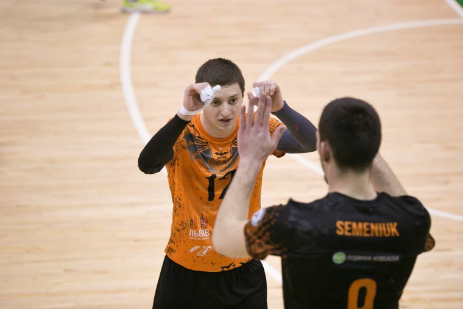
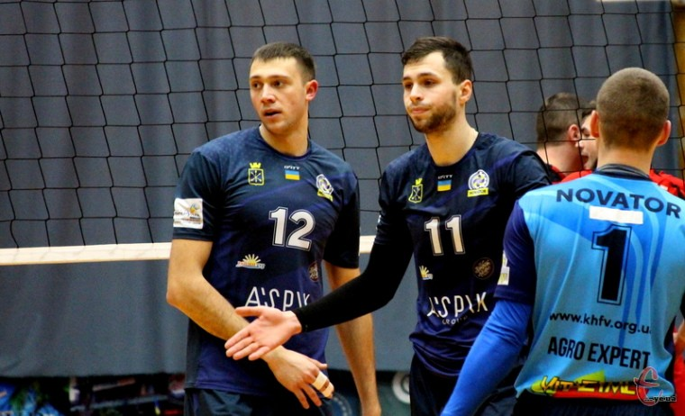

Горден БРОВА: "В цьому сезоні було досить тяжко завойовувати золоті медалі"

Волейбольний сезон 2018\19 ліберо "Барком-Кажани" Горден Брова називає найтяжчим за останні роки.
- Сезон закінчився не лише перемогою твоєї команди у чемпіонаті, а й твоїм особистим званням кращого гравця чемпіонату. Які емоції?
- Звісно, що для отримання такого результату – і командного, і індивідуального – шлях не може бути легким. Тим більше, що в цьому сезоні було досить тяжко завойовувати золоті медалі. Насправді, відстоювати звання чемпіона важче і фізично, і морально. Всі хочуть «попити твоєї крові». Тому, усі матчі були дещо агресивнішими. Але результат того вартує. Емоції просто переповнюють. Це був тяжкий сезон, напевно, найтяжчий. Всі дуже раді, що змогли відстояти звання чемпіонів України з волейболу, не підвели своїх вболівальників.
Іван ТЕРЕЩУК: "Чемпіонат стане цікавішим, якщо в Суперлізі гратимуть не 8 клубів, а 10"

Директор хмельницького "Новатору" вважає, що клуб ще може повернутися в елітний дивізіон.
"Є ряд клубів, у тому числі й наш, які хочуть на наступний чемпіонат збільшити кількість команд у найвищій лізі, - цитує сайт ye.ua директора ВК "Новатор" Івана Терещука. – Ми будемо виходити з такою пропозицією до Федерації волейболу України. Вважаю, що чемпіонат стане цікавішим, якщо в Суперлізі гратимуть не 8 клубів, а десять. Та й тури складатимуться не з двох матчів, а одного, а ігри відбуватимуть щотижня. Утім, чи зможемо змінити формат змагань у чоловіків та жінок, час покаже".
Нагадаємо, що бронзовий призер сезону 2017\18 ВК "Новатор" посів останню сходинку Суперліги України 2018\19 та втратив право виступати у головному чемпіонаті країни у сезоні 2019\20.